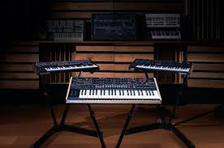

Piano
There are two types of pianos.
Normal piano
A normal piano is familiar to many, having notes not far off from that of a harp. But nobody cares about normal pianos
Synthesizer
The synthesizer is a massive amount of instruments put into one. It is capable of playing sounds from guitars, as well as certain drum aspects coupled with a huge array of different instruments and custom-made sound types. Most of these sounds are especially pleasing to the human ear, capable of making background noises, guitar chords, and great additions to the song overall.

Photo by unknown from wikimedia commons
Piano
Photo by unknown from Perfect circuit